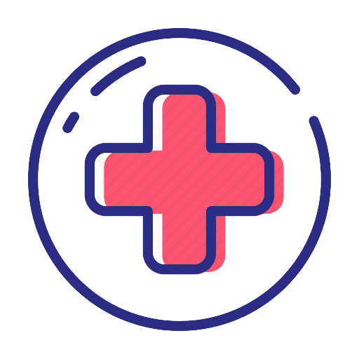

<div class="d-flex" id="wrapper">

  <!-- Sidebar -->
  <div class="bg-light border-right" id="sidebar-wrapper">
    <div class="sidebar-heading"> Clinica Online</div>

    <div class="list-group list-group-flush" *ngIf="currentUser[0].perfil == 'admin'">
      <a class="list-group-item list-group-item-action bg-light" (click)="compSeleccionado = 'Habilitar profesional'">Habilitar profesional</a>
      <a class="list-group-item list-group-item-action bg-light" (click)="compSeleccionado = 'Alta admin'">Alta admin</a>
    </div>

    <div class="list-group list-group-flush" *ngIf="currentUser[0].perfil == 'profesional'">
      <a class="list-group-item list-group-item-action bg-light" (click)="compSeleccionado = 'Turnos'">Turnos</a>
      <a class="list-group-item list-group-item-action bg-light" (click)="compSeleccionado = 'Horarios'">Horarios</a>
      <a class="list-group-item list-group-item-action bg-light" (click)="compSeleccionado = 'Atender turnos'">Atender
        turnos</a>
    </div>

    <div class="list-group list-group-flush" *ngIf="currentUser[0].perfil == 'paciente'">
      <a class="list-group-item list-group-item-action bg-light" (click)="compSeleccionado = 'Sacar turno'">Sacar turno</a>
      <a class="list-group-item list-group-item-action bg-light"(click)="isCollapsed = !isCollapsed" [attr.aria-expanded]="!isCollapsed" aria-controls="collapseExample" style="user-select: none;">Turnos 
        <span class="text-right" *ngIf="isCollapsed" style="user-select: none;">&#9660;</span>
        <span class="text-right" *ngIf="!isCollapsed" style="user-select: none;">&#9650;</span>
      </a>
      <div id="collapseExample" [ngbCollapse]="isCollapsed">
        <a class="list-group-item list-group-item-action  text-right" (click)="compSeleccionado = 'Proximos turnos'" style="background-color: rgb(219, 219, 219);user-select: none;">Proximos turnos</a>
        <a class="list-group-item list-group-item-action  text-right" (click)="compSeleccionado = 'Historial de turnos'" style="background-color: rgb(219, 219, 219); user-select: none;">Historial de turnos</a>
      </div>
    </div>

  </div>
  <!-- /#sidebar-wrapper -->

  <!-- Page Content -->
  <div id="page-content-wrapper">

    <nav class="navbar navbar-expand-lg navbar-light bg-light border-bottom">
      
      <p class="pt-3">{{currentUser[0].email}}</p>

      <div class="collapse navbar-collapse" id="navbarSupportedContent">
        <ul class="navbar-nav ml-auto mt-2 mt-lg-0">
          <li class="nav-item active">
            <button type="button" class="btn btn-light" (click)="logout()">Desloguearse</button>
          </li>
        </ul>
      </div>
    </nav>

    <div class="container-fluid">
      <h1 class="mt-4 text-center">{{compSeleccionado}}</h1>

      <app-turnos *ngIf="compSeleccionado == 'Turnos' && currentUser[0].perfil == 'profesional'"></app-turnos>
      <app-horarios-profesional *ngIf="compSeleccionado == 'Horarios' && currentUser[0].perfil == 'profesional'"></app-horarios-profesional>
      <app-atender-turnos *ngIf="compSeleccionado == 'Atender turnos' && currentUser[0].perfil == 'profesional'"></app-atender-turnos>

      <app-sacar-turno *ngIf="compSeleccionado == 'Sacar turno' && currentUser[0].perfil == 'paciente'"></app-sacar-turno>
      <app-proximos-turnos *ngIf="compSeleccionado == 'Proximos turnos' && currentUser[0].perfil == 'paciente'"></app-proximos-turnos>
      <app-historial-turnos *ngIf="compSeleccionado == 'Historial de turnos' && currentUser[0].perfil == 'paciente'"></app-historial-turnos>

      <app-habilitar-profesional *ngIf="compSeleccionado == 'Habilitar profesional' && currentUser[0].perfil == 'admin'"></app-habilitar-profesional>
      <app-alta-admin *ngIf="compSeleccionado == 'Alta admin' && currentUser[0].perfil == 'admin'"></app-alta-admin>
    </div>
  </div>
  <!-- /#page-content-wrapper -->

</div>
